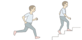
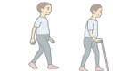
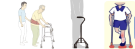
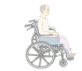
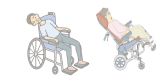

功能分級與目標
01
/02
主選單
請選擇其中一種分級
分級一
可以跑跳，上下樓梯不需扶欄杆

分級二
能放手行走，或拿1支單點柺杖行走

分級三
扶持助行器才能行走
(必須用 大底面四腳柺 或 雙側枴杖才能走亦屬之)

分級四
無法行走，但在一般輪椅上可坐穩

能在床邊坐穩
下肢無明顯攣縮
分級五
一般輪椅上無法坐穩，須高背輪椅

評估人員
李小明
教練
評分標準
項目
目標值
(智能輔助)
功能分級
進食
0
穿衣
0
穿褲/襪/鞋
0
床邊坐起
0
站起
0
床椅移位
0
輪椅坐入
0
駕電動輪椅
自推輪椅
0
步行
0
如廁（都尿布為1）
0
沐浴
0
爬樓梯
0
總分
0分
請選擇功能分級與目標
7分-完全獨立
6分-有條件的獨立
5分-監護或準備
4分-輕度協助
3分-中度協助
2分-大量協助
1分-完全依賴
補充
確定
功能分級與目標
7分-完全獨立
活動完成規範，無需矯正，不需其他輔具和幫助，並在規定時間內完成
6分-有條件的獨立
需要使用其他輔具，或超過合理的時間，或有安全風險
5分-監護或準備
只需要口頭提示、誘導、協助穿支架或準備物品等
4分-輕度協助
照顧者需協助＜25%
3分-中度協助
照顧者需協助50–25%
2分-大量協助
照顧者需協助75–50%
1分-完全依賴
照顧者需協助＞75%
下一步